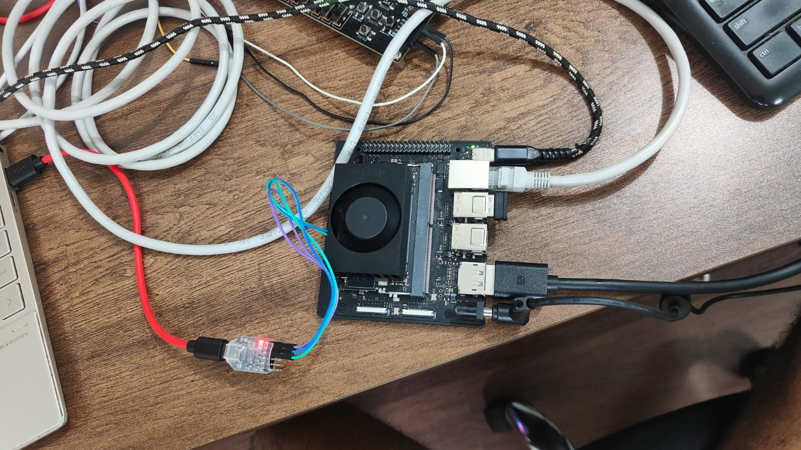
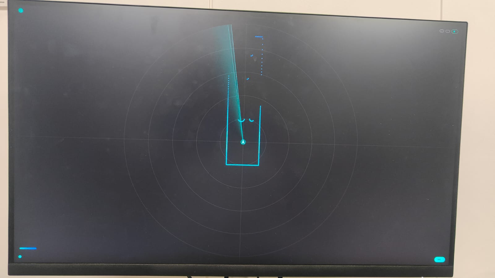
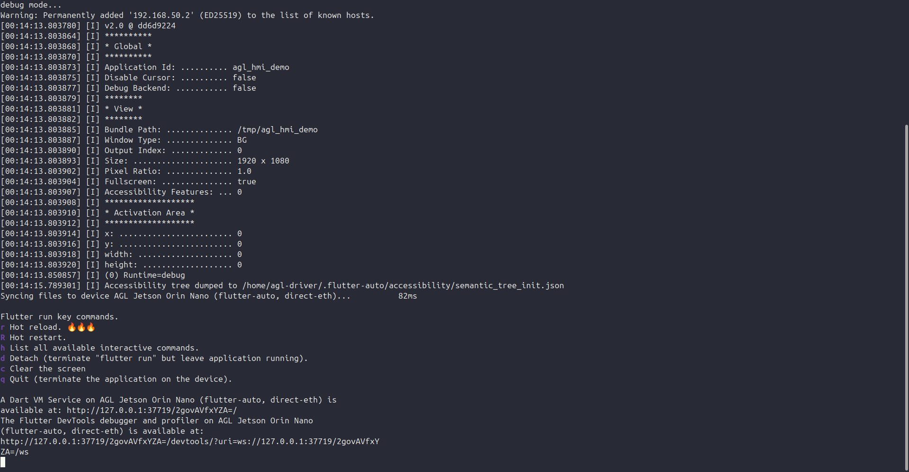

Week 9 ended with two jobs: make the dashboard fit the screen, and move it onto the real Orin Nano. This week is the move. And just like the transport leg back in Week 8, the app itself was never the hard part. Getting the board into a state where it could draw a single pixel was.
The dashboard from last week ran on AGL inside QEMU on my laptop. That was deliberate. The whole reason for building the hot-reload loop against an emulator first was so that this week would be a change of address and nothing more. Same Flutter SDK, same engine version, same way of pushing the app onto the target. The plan was that the only new variable on the Jetson would be the Jetson.
That plan held. The dev loop moved across almost untouched. What did not move across for free was the board underneath it, and most of the week went into three problems that had nothing to do with the app and everything to do with making a real display light up.

The loop is the one from Week 9. A Flutter custom device, a few helper scripts that push the built app bundle onto the target over SSH, launch the AGL Flutter embedder on the compositor, and tunnel the debug port back so hot reload can attach. On the emulator that target was a virtual machine on local ports. On the Jetson it is a real board on the other end of a cable.
I connected the laptop straight to the board with a single Ethernet cable, gave each end a fixed address, dropped my SSH key onto the board so the push scripts authenticate without a password, and pointed the device at the board. The engine version on the laptop already matches the one inside the image, because the image was built that way on purpose. So once the board was reachable, flutter run -d agl-jetson-orin behaved exactly as it did against QEMU.
Why this matters None of the plumbing changed between the emulator and the board. The scripts, the engine, the commands are identical, retargeted from local ports to a cable. That is the payoff of having proven the loop on QEMU first: the loop was never in question this week.
The first real wall was that the display server itself refused to start. Booting the flashed image and logging in over the serial console, the compositor service was dead. It started, autologged the driver user, and then its main process exited in about 38 milliseconds with nothing useful in the journal. The monitor showed the vendor boot logo and then went black the moment Linux took over.
Running the compositor by hand printed the real message: no drm device found, followed by a failure to create the graphics backend. Looking closer, the GPU device node existed, but it had no display connectors attached to it at all. That black-after-the-logo behaviour is the tell: the bootloader was driving the panel, and once the kernel took charge nothing was.
The cause was that kernel mode-setting was switched off. The NVIDIA display driver and its mode-setting module were present in the image, but they were not being loaded with mode-setting enabled, so the GPU came up render-only, with no outputs for the compositor to use. Loading them with mode-setting on immediately produced a connected DisplayPort output. The compositor then came up in full, read the monitor's supported modes off its EDID, enabled the output, and reported itself ready. Making that stick was two small configuration files so the modules always load the right way at boot.
# the GPU came up render-only: a card node existed, but with zero connectors
# load the display driver WITH kernel mode-setting on
modprobe nvidia-modeset
modprobe nvidia-drm modeset=1 # a connected DP output now appears
# make it permanent, so every boot loads it correctly
echo nvidia-drm > /etc/modules-load.d/nvidia-drm.conf
echo "options nvidia-drm modeset=1" > /etc/modprobe.d/nvidia-drm.confNot a rebuild The entire graphics stack was already inside the image: the compositor, the driver, the userspace libraries. This was a runtime setting that was simply off, not a missing piece and not a wrong image. Worth remembering before reaching for a full rebuild to fix a boot problem.
With the compositor alive, the app deployed cleanly. The debug launch reported in, the Dart runtime came up and announced its service port, and the screen stayed black. The app was running and drawing to something the panel could not see.
AGL's compositor holds a black placeholder over the screen until a client claims the background role through the compositor's shell protocol. My app had come up as an ordinary window, which this compositor does not put on screen by default. The fix was to ship a small configuration file alongside the app bundle that asks for the background role at full screen. With that in place the placeholder lifted and the dashboard filled the panel.
# shipped with the app bundle; asks the compositor for the background role
[view]
window_type = "BG"
fullscreen = trueThere is one sharp edge here that cost me some time. That background role can be claimed only once per compositor session. The image ships a sample application that grabs the role at boot, so putting my dashboard on screen meant retiring the sample and restarting the compositor so the role was free again. It is invisible until it bites, which is exactly why it is written down.
With mode-setting on, the compositor up, and the background role claimed, the dashboard came up full screen on a real monitor, driven by the real Orin Nano GPU.

And the part that made all of the earlier groundwork worth it survived the move: the hot-reload loop works on real silicon exactly as it did on the emulator. Edit a line in the editor on the laptop, press one key, and the running dashboard on the board updates in about a third of a second, without restarting.

flutter run -d agl-jetson-orin attached to the board over the cable. The app synced to the device, the Dart VM service came up, and the hot-reload key menu is ready. From here, editing a line on the laptop and pressing r updates the running dashboard on the board in a fraction of a second.The whole bring-up, reduced to the commands that matter, in order. Everything below is run once to take a freshly flashed board to a hot-reloading dashboard.
Make the compositor draw. On the board, over the serial console, as root:
# the GPU came up render-only. load the display driver WITH kernel mode-setting,
# then make it permanent so every boot loads it correctly.
modprobe nvidia-modeset
modprobe nvidia-drm modeset=1
echo nvidia-drm > /etc/modules-load.d/nvidia-drm.conf
echo "options nvidia-drm modeset=1" > /etc/modprobe.d/nvidia-drm.conf
reboot # agl-compositor now starts on its own and drives the panelPut the laptop and the board on one cable. A direct Ethernet link, a fixed address on each end, and the laptop's key on the board so the push scripts authenticate:
# laptop
sudo ip addr add 192.168.50.1/24 dev <laptop-eth>
# board (serial console)
ip addr add 192.168.50.2/24 dev <board-eth>
# laptop -> board key auth for the custom-device push scripts
ssh-copy-id agl-driver@192.168.50.2Register the board as a Flutter device and run. The same custom-device loop from Week 9, pointed at the board:
flutter config --enable-custom-devices
flutter custom-devices add # ping / install / run / forward-port, all over SSH to the board
flutter run -d agl-jetson-orin # build, push onto the board, launch, attach for hot reload
# edit lib/main.dart, press r -> live on the board in ~0.3 sClaim the screen. Ship this file with the app bundle so the app asks the compositor for the full-screen background role, and free that role first (it can be claimed only once per compositor session):
# config.toml, shipped alongside the app bundle
[view]
window_type = "BG"
fullscreen = true
# retire the image's sample app and restart the compositor so the role is free
systemctl disable --now flutter-samples-material-3-demo
systemctl restart agl-compositorStatus: the HMI is on the target. It runs on the real Jetson Orin Nano, full screen, drawing on a real display through the AGL compositor, and it hot-reloads over a direct cable to the laptop. The final box of the project's diagram is now running where it is meant to run.
Week 8 moved the transport onto real silicon. Week 9 built the dashboard. This week put the two together: the actual application, running on the actual board. What is left is to make it come up on its own and to feed it the live stream on the target, and the project is standing on its own hardware.